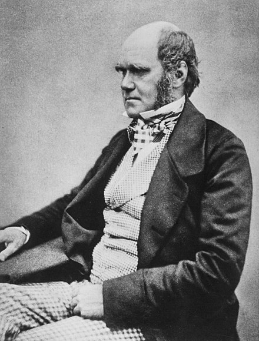

Charles Darwin
The Father of Evolutionary Biology

Darwin, before his publication on the Origin of Species
Timeline of Darwin's Life
- Born in 1809, in Shrewsbury, U.K.
- Attended the Shrewsbury School in 1818.
- Became an apprentice doctor in 1825.
- Moved to Christ's College in Cambridge in 1828.
- Goes on a voyage with the HMS Beagle, venturing to South America (1831)
- On the voyage, Darwin investigated zoological and geological topics (including marine invertebrates).
- At the Galapagos Islands in 1835, Darwin found slight variations in mockingbirds and turtle shells as he moved from island to island.
- Darwin arrived back to Shrewsbury, and became the Secretary of the Geological Society in 1838.
- Darwin marries Emma Wedgwood in 1839 and moves to London.
- Darwin continued to work on framing his theory of natural selection through 1844.
- Darwin contacted Alfred Russell Wallace, who was also contemplating the introduction of new species, and maintained a coresspondence with him.
- Darwin published On the Origin of Species, which contained an explanation for common ancestral descent of species.
- Darwin's publication received international interest.
- Despite illness, Darwin's work continued as he studied topics such as human descent, insect pollination, and more.
- Darwin published works on these topics, including The Power of Movement in Plants
- Darwin passed away in 1882.
Please refer to the link below for more information on Charles Darwin.
More information on Charles Darwin